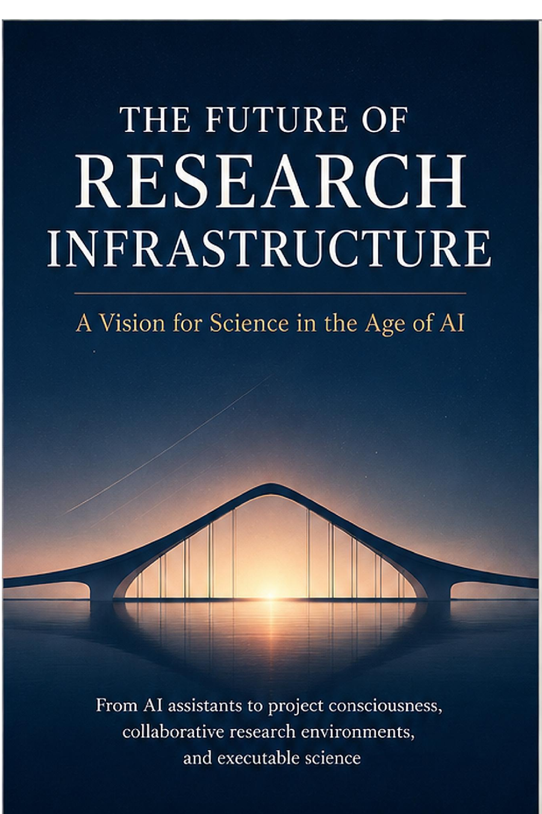

Executable Science & Research · Axiologic Research Editions
The Future of Research Infrastructure
A Vision for Science in the Age of AI
A blueprint for the project memory, provenance, coordination, evaluation, and governed execution that allow AI-assisted research to remain cumulative and inspectable.
From output to scientific state
Research cannot become reliable merely by generating more prose, code, or hypotheses. The enduring unit is a project state that records questions, evidence, claims, decisions, uncertainty, and the conditions under which each item may be used.
A scientific control plane
The proposed infrastructure joins living specifications, versioned knowledge, executable capabilities, task orchestration, budgets, provenance, and evaluation. Each component is intended to make collaboration among people and agents easier to audit and revise.
The point of AI in science is not to make more outputs. It is to make the path from question to warranted change more capable.
Infrastructure for corrigibility
The book treats governance, reproducibility, and institutional continuity as engineering requirements: research must survive changing models, personnel, organizations, and incentives.